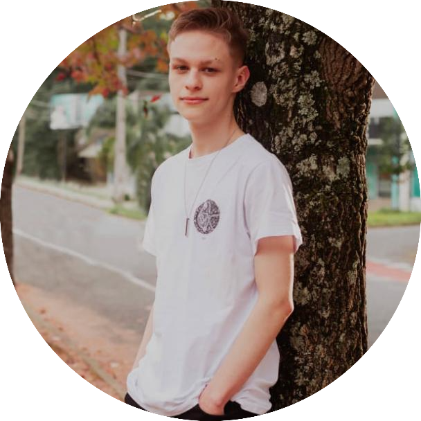

VITOR MILANI
Futuro programador, atualmente cursando a graduação em Engenharia de Software.
SOBRE MIM
Desde sempre, tive curiosidade e desejo de aprender sobre programação. No início de 2023, dei início à minha jornada como estudante de Engenharia de Software na faculdade Unicesumar. Durante esse período, obtive uma compreensão mais profunda dos aspectos que envolvem o desenvolvimento de software e suas etapas. Tenho buscado constantemente aprimorar minhas habilidades e estou sempre pronto para enfrentar os desafios que surgem no caminho.
LINGUAGENS QUE ESTUDO
- Html
- CSS
- Java
- C
- C++
PROGRAMAS QUE USO
- VS Code
- Dev-C ++
Meus Projetos
Ideias e projetos realizados recentemente
Todo List com persistência de dados
Sistema desenvolvido para a criação e gerenciamento de uma lista de tarefas (Todo List), oferecendo recursos como ocultar tarefas concluídas, editar o conteúdo das mesmas e garantir a persistência dos dados utilizando o local storage.
Sistema de gestão de notas
Sistema projetado para facilitar o cadastro e gerenciamento de notas, tendo a capacidade de registrar as informações dos alunos, como nome, RA e e-mail, além das notas. Além disso, possibilita o cálculo das médias bimestrais e semestrais.